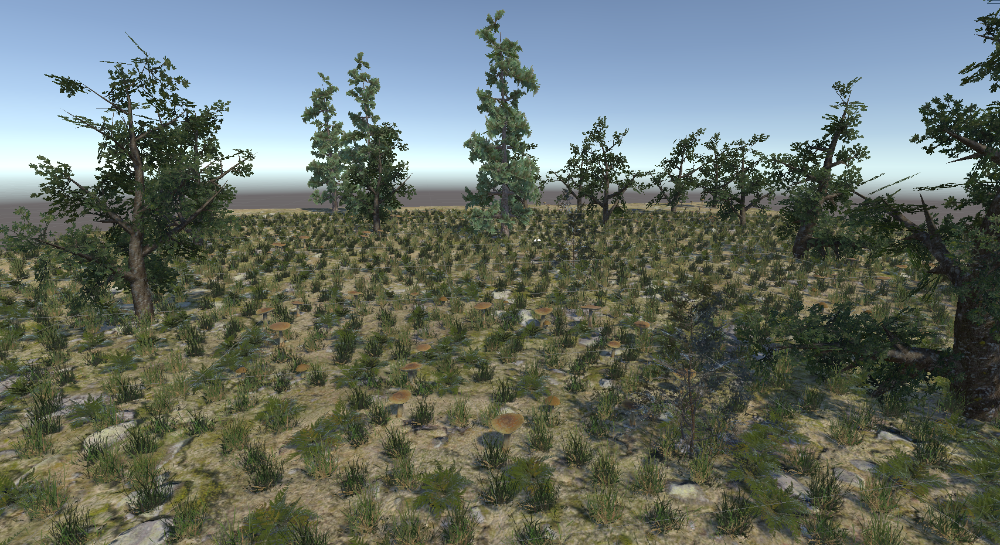
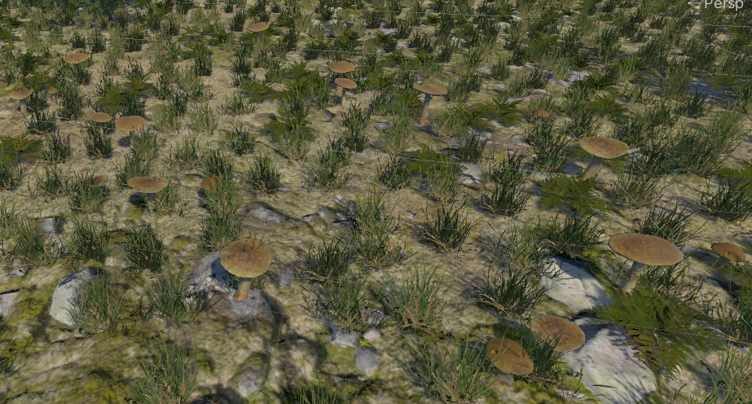
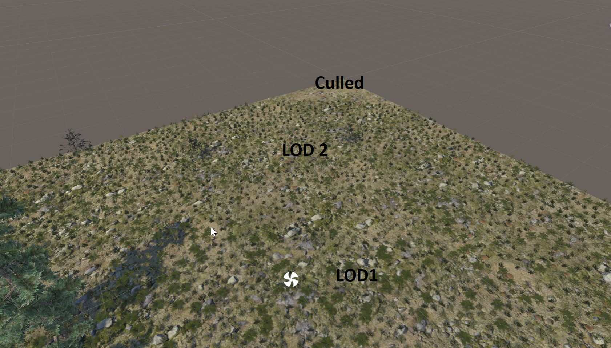

January, 2023
RANDOM FOREST GENERATOR
This page highlights my ongoing features experimentation with random natural environment generation in Unity.
January, 2023
This page highlights my ongoing features experimentation with random natural environment generation in Unity.
Here are the features I am experimenting with in my research
In this part of my research, I practiced creating shaders for vegetation using Unity's ShaderGraph. Here are a few examples:
Here are the names of algorithms I have implemented through this tool:
Generating points within a given area with an origin point. The origin point can be random, at the center of the area, tied to a reference, or originating from the same algorithm, allowing the tool to be used recursively.
Throughout my research journey in random landscape creation, I came across other interesting features. I subsequently attempted to replicate them using the available documentation and tutorials.
One of my discoveries was about erosion created with a compute shader on terrain generated using Perlin noise. I attempted to replicate what had been achieved in youtube vidéo of 'Sebastian Lague', with the goal of learning how to use compute shaders in Unity.
During my research, I also had the opportunity to experiment with biome creation by varying two randomly generated 2D textures, one representing the temperature of the terrain and the other depicting humidity.
Here is an example of my work in Unity for biome modeling


